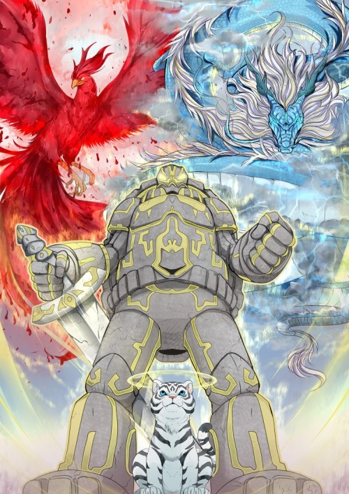

Review
Suggested by a friend, this was actually the reason I bought Kindle Unlimited. Once I started I simply could put it down, reading roughly one book a day. The characters where likeable and had a depth to them with hardly any throw-away characters with most characters being relevent and coming back to effect the story in some way, the world building was expansive and detailed, but not excessive, with a fleshed-out and rigerous magic system. Lindon's goals were relatable and his growth seemed natural and believable. Overall, I would absolutely recommend this series with each book an epic tale of adventure, growth and exploration. You know it is good when a re-read is the same, if not more, exhilarating than the first.
One slight warning: this series is so good that, once read, it will be difficult to read a series in this genre again without comparing it.
Magic System
Everyone has a Core, which is the person's supply of Madra lies. Madra is able to be channeled throughout the body via madra channels. It gathers naturally over time and thus one's core refills naturally. However, a technique called cycling may be used to absorb extra madra from the environment (the vital aura) by pumping one's madra throughout one's body, turning pure madra into madra specific to one's Path. As Madra gathers over time, beats and plants that have been alive for long enough become "sacred" and are able to become a remnant, which is a spirit made of madra in one's soul and is released upon death.
People who practice the Sacred Arts are called Sacred Artists. A sacred artist follows a Path, which is a defined set of moves (techniques) they may use. Techniques consume madra, and get stronger the more madra one uses. There are four main classes of techniques:
- Striker — strike one's opponent from a distance.
- Forger — create stable, physical manifestations with one's madra.
- Enforcer — empower one's body or an object that one is holding.
- Ruler — use madra to manipulate one's surroundings.
Progression
As Cradle is a progression fantasy, it has very clear stages of progression. Each stage requires exponential gathering of power (via training and core enlargement) and have side-effects beyond having a larger core and denser madra, so are not just titles. The tradition of the Sacred Valley states that one should were a badge displaying their specialised class with the material varying on their rank.
|
| Rank
| Requirements
| Benefit
|
|
Foundation |
Posess a core |
Able to absorb madra from vital aura |
|
Copper |
|
Gain "copper sight" — ability to see vital aura. Able to cycle madra. |
|
Iron |
Enfuse body with their madra |
Gain an "iron body" - body is reborn with heightened strength, regeneration, flexibility, etc. depending on the type |
|
Jade |
Create a spiral in one's core |
Gain an "iron body" - body is reborn with heightened strength, regeneration, flexibility, etc. depending on the type |
| Gold |
Lowgold |
Gain power, or taking in a compatible remnant, or contracting with a sacred beast |
Increases strength of Iron body and increases spiritual perception |
| Highgold |
Gain power, or digest and master the remnant one took in |
Increases strength of Iron body and increases spiritual perception |
| Truegold |
Gain power, or digest and master the remnant one took in |
Increases strength of Iron body and increases spiritual perception |
| Lord/Lady |
Underlord |
Reflect: why did I begin to follow the sacred arts? Steps: master yourself, master the world around you, connect yourself to the world. |
Body and soul are reborn in Soulfire (purified vital aura), creates and gains access to one's soulspace |
| Overlord |
Reflect: who are you now, in the present? What pushes you forward? |
Same as Underlord |
| Archlord |
Reflect: where am I going, who will I become? |
Same as Overlord |
|
Herald* |
Fusing with one's own remnent |
Do not age, able to ascend, gain absolute power and mastery over one's body |
|
Sage* |
Manifest an Icon of Authority |
Do not age, able to ascend, greater Will and able to exercise Authority in Commands. Commands which resonate with one's Icon(s) are more powerful. |
|
Monarch |
Achieve both Sage and Herald. As such, one is only ever a Sage/Herald before advancing to Monarch |
Combination of Sage and Herald benefit's, significantly more powerful |
|
Dreadgod |
Feed off of Hunger aura |
|
* Note that Herald and Sage are considered at the same level (non-linear), posessing different skillsets.
A physical replica of Lindon's badges:
Working left to right: copper, iron, jade, gold, wooden (unsouled), halfsteel (lord), wintersteel (sage), goldsteel (peak archlord), red material (herald), blue material (monarch)
Main Characters
- Wei Shi Lindon Arelius - Main character, starts off as Unsouled in the Sacred Valley. Later known as the Sage of Twin Stars or the Void Sage, he splits his core, one with pure madra and the other Blackflame. He creates a pact with Orthos, a turtle following Blackflame, and has Little Blue, a Sylvan Riverseed who has the ability to heal madra channels. His goldsign are black-and-red Blackflame eyes which creates an image of an "angel of death" (~Jai Chen, Blackflame). Notably, he manifests the Void Icon to become an Underlord Sage upon the realisation "I am the end", later manifesting the Hammer Icon. He becomes the head of the Twin Star sect which protects and trains people in his footsteps. Upon losing his arm in a dual with Jai Long, he obtains a construct containing a core with the ability to Consume madra which is useful in gaining power and cancelling attacks. This becomes more poerful when he replaces it with the Slumbering Wraith's arm and leads him to becoming (nearly) a Dreadgod once he devours the Silent King, being coined the Empty Ghost by Akura Malice. Creates weapons from the corpses and cores of the Dreadgods which are strong enough to easily beat Monarchs.
- Yerin Arelius - Main character, is the apprentice of the Sword Sage before he is murdered. Joins Lindon in escaping the Sacred Valley and accompanies him throughout the series. Has a belt of blood thing which gains sentience once the Blood Phoenix awakes. Her goldsign are a collection of steel-like sword protruding from her back. Wins the Uncrowned tournament. Notably fuses with Ruby, her bloodspawn remnant, to become an Underlord Herald. Later manifests the Sword and Death Icons.
- Eithan Arelius - Main character, becomes Lindon and Yerin's master in Soulsmith as the Underord Patriarch to the Arelius family, adopting them. He provides them with expensive elixirs and pills and provides rigorous training and advice to help them advance quickly - the most notabele being Lindon's powerful Iron body (using excessive Sandpiper venom) and the Heaven and Earth Purification Wheel to grind away and expand one's core (plural in Lindon's case). Turns out to be Ozriel, Broom Sage and Judge of Death. Fights with a pair of scissors.
- Suriel - Suriel, the Sixth Judge of the Abidan Court, known as the Phoenix, is the Judge of restoration and order. She visits Cradle in Unsouled to correct an unauthorised special breach by the Li Clan Grand Elder, Li Markuth. She meets Lindon and sees in him great determination, so she decides to show him the fate of the Sacred Valley at the hands of the Dreadgods which serves to fuel him through the majority of the series. She gives him a marble with a blue flame inside which allows him to contact her.
- Orthos - Orthos is an ancient turtle who became corrupted with the Path of Blackflame. He bonds with Lindon under the help of Eithan. He is eventually cured by Little Blue. Upon achieving Herald he is able to become human.
- Little Blue - A Sylvan Riverseed, she is originally obtained by Lindon in the Heaven's Glory school's lesser treasure hall. With the help of Eitheran's Underlord scales, she grows into a useful being able to cleanse and heal madra channels, most notably useful for reversing the corruption of Blackflame and for healing Jai Chen. Upon achieving Herald, she is able to become human.
- Dross - A mind spirit found by Lindon in the pocket-world of Ghostwater, Lindon transfers him into his mind to stop him dissipating. He becomes extremely advanced and aids Lindon in analysis, able to control Lindon's body efficiently without Lindon paying much attention. He gains the ability to telepathically communicate with others, and splits himself into the other main character's heads near the end of the books. He has a broad sense of humour throughout the series.
- Ziel - Introduced as a trapped Truegold in Ghostwater, he becomes an ally. Healed by Little Blue, it turns out Ziel is a trapped Archlord who is proficient in Scripting.
- Mercy - Introduced in Skysworn, she is the cast-out daughter of Monarch Akura Malice. Limited to lowgold, she is released when she agrees to go back to her mother in Underlord in order to help Lindon and Yerin fight the Kingdom. She has a powerful bow which used to be her mothers, which she uses to kill Malice in later books with a Penance prototype. She manifests the Joy icon.
- Jai Long - Introduced as the primary enemy in Soulsmith, Jai Long is a truegold who is the right-hand man to the leader of the Sandviper Sect. He was banished from the Jai clan after a nasty incident when merging with a non-compatible remnant at Jade. When Linson kills his friend in the Transcandental Ruins, he challenges Lindon to a duel in a year's time. Lindon was but an Iron at the time so this felt like a death sentence. Jai leads a bloody incursion against the Jai clan and launches an assault on the Arelius family in Blackwater but is caught by Jai Daishou, the Jai clan's patriarch. He is skeptic after Lindon heals ihs sister, Jai Chen, but becomes more amicable towards him. Jai ends up amputating Lindon's arm during their dual, which becomes important as this is why Lindon gains his Hunger arm which is a useful tool throughout the series. Jai joins the Twin Star Sect with his sister and becomes friendly, only to die while under the influence of the Silent King.
- Fisher Gesha - Introduced in Soulsmith, Fisher Gesha is a highgold elder of the Fisher sect. Lindon persuades her to train him as a Soulsmith, a profession he becomes a master at and eventually manifests the Hammer Icon for his efforts. She decides to join Lindon, Yerin and Eithan as she has spent too long in Serpent's Grave, and becomes a stubborn but caring grandmother figure. She is the one to initially create and install Lindon's hunger arm.
Main Enemy

The main enemies in Cradle are the Dreadgods, which is established via Suriel's visions in Unsouled. Prior to the last couple of books, there was no other core enemy, but rather some one opposing them such as Jai Long, Naru Huan, the Seishen Kingdom, and Akura Harmony. In the last few books it is revealed that the Dreagods exist due to the Monarch's presence being too much for Cradle and creating Hunger aura, wherein they become the enemy alongside the dreadgods. However, unlike the Dreadgods which were all vanquished, the Monarch's fates varied from killing, ascending or aiding the main characters.
The dredgods themselves are powerful creates beyond that of Monarch. In the past, when one awoke, Monarch's came to pummel it back into a slumber and never actually killing it. Dreadgods have the ability to re-form as long as there is Hunger aura present - the reason the Monarchs need to be dealt with - and gain strength if one of their comrade's perish. The dreadgods in order of defeat are listed below, along with the weapon Lindon created from them:
- The Silent King - considered the weakest, the Silent King is a white tiger with a white halo with the ability to control anyone in the vicinity. Those with a strong enough willpower, such as Lindon, can fight this ability. Once killed, Lindon creates a halo for himself which empowers Dross' abilities.
- The Weeping Dragon - a blue serpentine dragon that travels in thunderstorms. Once killed, Lindon buts the dragon's binding inside Wavedancer (a sword) which is able to release dragon breath, a formidable technique.
- The Wandering Titan - a giant stone goliath with the shell of a tortoise. Once killed, Lindon creates a sheild which revolves around him.
- The Bleeding Phoenix - a gian phoenix made of blood, has the ability to control blood. Uses this to transform any blood into nasty creatures called blood shadows and blood spawns. Once killed, Lindon creates a cape.
The original Dreadgod, Subject One, is the father of the Hunger aura who was originally a researcher. He was found by Reigan Shen then Lindon in the heart of the Labyrinth. Reigen Shen steals an object which is able to summon the dreadgods and Lindon, after conversing to and gaining ownership of the Labyrinth, takes the wraith's arm to replace his broken construct arm.
Useful Links